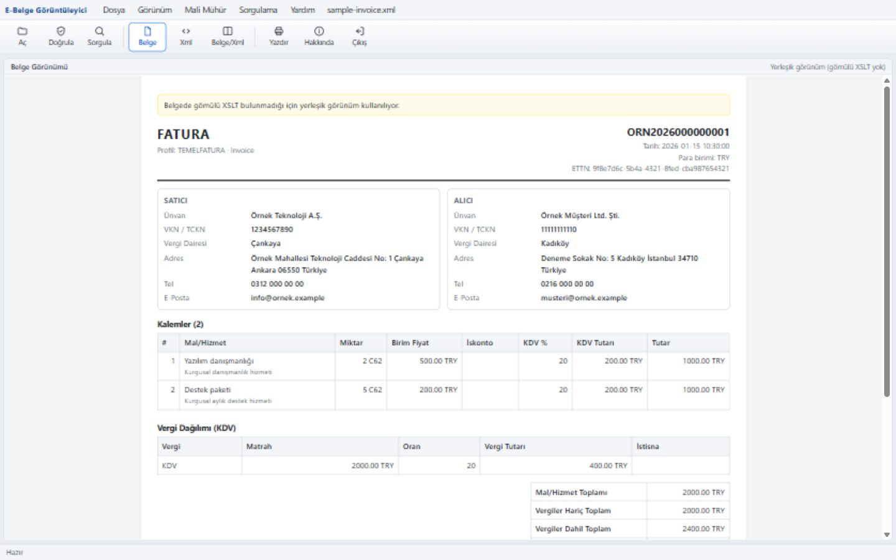

GİB'in Java Web Start tabanlı e-Fatura görüntüleyicisine alternatif, Java gerektirmeyen açık kaynak masaüstü uygulama. e-Fatura, e-Arşiv ve e-İrsaliye XML belgelerini görüntüler, yazdırır ve GİB sorgu servisinde kontrol eder. Arayüz HTML/JavaScript, arka uç Rust (Tauri 2).

UBL-TR 1.2 / 2.1 belgelerini görüntüler.
GİB görüntüleyicisindeki gibi çizim; gömülü XSLT yoksa yerleşik görünüm.
Windows yazdırma penceresinden kâğıda veya PDF'e.
İmzalayan, sertifika, zaman, algoritma, DigestValue.
Belge kayıtlıysa tarih, iletilme zamanları ve iptal/itiraz durumu.
Dosya pencereye bırakın veya komut satırından açın.
e-Fatura Goruntuleyici_<sürüm>_x64-setup.exe — kullanıcı bazlı, yönetici yetkisi gerekmez.efatura-goruntuleyici.exe tek dosya, kurulum gerektirmez.sorgu.efatura.gov.tr adresine gider.